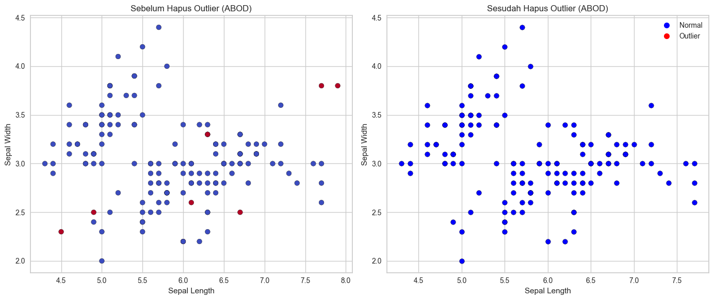

Menghapus Outlier (iris)#
import pandas as pd
from pycaret.anomaly import *
import matplotlib.pyplot as plt
# load data
data = pd.read_csv("dataset/iris.csv")
data = data.drop(columns=["iris"])
# setup data PyCaret
s = setup(data)
# membuat model dari metode
abod = create_model('abod', fraction=0.05)
results = assign_model(abod)
# menghapus data outlier
cleaned_data = results[results["Anomaly"] == 0].copy()
print("Data asli: ", results.shape)
print("Data setelah hapus outlier: ", cleaned_data.shape)
# buat file csv baru
cleaned_data.to_csv("iris_ABOD_cleaned.csv", index=False)
fig, axes = plt.subplots(1, 2, figsize=(14,6))
# Sebelum dihapus data outlier
axes[0].scatter(
results['sepal length'], results['sepal width'],
c=results['Anomaly'], cmap='coolwarm', edgecolor='k'
)
axes[0].set_title("Sebelum Hapus Outlier (ABOD)")
axes[0].set_xlabel("Sepal Length")
axes[0].set_ylabel("Sepal Width")
# Sesudah dihapus data outlier
axes[1].scatter(
cleaned_data['sepal length'], cleaned_data['sepal width'],
c='blue', edgecolor='k'
)
axes[1].set_title("Sesudah Hapus Outlier (ABOD)")
axes[1].set_xlabel("Sepal Length")
axes[1].set_ylabel("Sepal Width")
handles = [
plt.Line2D([0], [0], marker='o', color='w', label='Normal',
markerfacecolor='blue', markersize=8),
plt.Line2D([0], [0], marker='o', color='w', label='Outlier',
markerfacecolor='red', markersize=8)
]
plt.legend(handles=handles)
plt.tight_layout()
plt.show()
| Description | Value | |
|---|---|---|
| 0 | Session id | 3060 |
| 1 | Original data shape | (150, 4) |
| 2 | Transformed data shape | (150, 4) |
| 3 | Numeric features | 4 |
| 4 | Preprocess | True |
| 5 | Imputation type | simple |
| 6 | Numeric imputation | mean |
| 7 | Categorical imputation | mode |
| 8 | CPU Jobs | -1 |
| 9 | Use GPU | False |
| 10 | Log Experiment | False |
| 11 | Experiment Name | anomaly-default-name |
| 12 | USI | f0f9 |
Data asli: (150, 6)
Data setelah hapus outlier: (142, 6)
